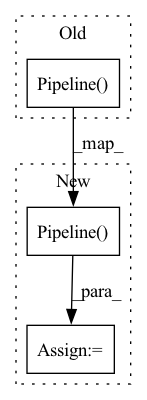

Pattern ID :31150
Before Change
// We do not pass the metadata connection config here as it might not be
// accessible. Instead it is queried from the active stack right before a
// step is executed (see `BaseOrchestrator.run_step(...)`)
return tfx_pipeline.Pipeline(
pipeline_name=zenml_pipeline.name,
components=list(tfx_components.values()),
pipeline_root=artifact_store.path,
enable_cache=zenml_pipeline.enable_cache,
)
def get_step_for_node(node: PipelineNode, steps: List[BaseStep]) -> BaseStep:
Finds the matching step for a tfx pipeline node.After Change
// accessible. Instead it is queried from the active stack right before a
// step is executed (see `BaseOrchestrator.run_step(...)`)
try:
pipeline = tfx_pipeline.Pipeline(
pipeline_name=zenml_pipeline.name,
components=list(tfx_components.values()),
pipeline_root=artifact_store.path,
enable_cache=zenml_pipeline.enable_cache,
)
except InvalidDAGError:
raise PipelineInterfaceError(
f"Some steps of the pipeline {zenml_pipeline.name} form a cycle "
"and can"t be executed. If you"re manually specifying step "In pattern: SUPERPATTERN
Frequency: 3
Non-data size: 3
Instances Fragment ID: 91469407
Project Name: maiot-io/zenml
Commit Name: a30b9ff16b1d4785fb802d7e9ca393d53f02edf2
Time: 2022-08-29
Author: schustmi@users.noreply.github.com
File Name: src/zenml/orchestrators/utils.py
M Class Name: AnonimousClass
N Class Name: AnonimousClass
M Method Name: create_tfx_pipeline(2)
N Method Name: create_tfx_pipeline(2)
M Parent Class:
N Parent Class:
M File Name: src/zenml/orchestrators/utils.py
N File Name: src/zenml/orchestrators/utils.py
M Start Line: 74
M End Line: 79
N Start Line: 77
N End Line: 92
Before Change
) -> BeamOutput[TextArtifact]:
import apache_beam as beam
with beam.Pipeline() as pipeline:
data = input_data.read_with_beam(pipeline)
result = data | beam.Map(lambda x: x)
After Change
) -> BeamOutput[TextArtifact]:
import apache_beam as beam
pipeline = beam.Pipeline()
data = text_artifact.read_with_beam(pipeline)
result = data | beam.Map(lambda x: x)
return (result, pipeline) Fragment ID: 91469406
Project Name: maiot-io/zenml
Commit Name: 94c2b54d457ad86c10214b95f8471de3dbd3f025
Time: 2021-09-16
Author: baris@maiot.io
File Name: run.py
M Class Name: AnonimousClass
N Class Name: AnonimousClass
M Method Name: DistSplitStep(2)
N Method Name: DistSplitStep(2)
M Parent Class:
N Parent Class:
M File Name: run.py
N File Name: run.py
M Start Line: 16
M End Line: 20
N Start Line: 21
N End Line: 25
Before Change
) -> BeamOutput[TextArtifact]:
import apache_beam as beam
pipeline = beam.Pipeline()
data = text_artifact.read_with_beam(pipeline)
result = data | beam.Map(lambda x: x)
return (result, pipeline)After Change
output_artifact: Output[TextArtifact]):
import apache_beam as beam
with beam.Pipeline() as p:
_ = (p
| input_artifact.read_with_beam()
| output_artifact.write_with_beam())
Fragment ID: 91469405
Project Name: maiot-io/zenml
Commit Name: 7d75b126b86336f4dc0d349c5b74f88f695088e3
Time: 2021-09-28
Author: bariscandurak@hotmail.com
File Name: run.py
M Class Name: AnonimousClass
N Class Name: AnonimousClass
M Method Name: DistSplitStep(2)
N Method Name: DistSplitStep(1)
M Parent Class:
N Parent Class:
M File Name: run.py
N File Name: run.py
M Start Line: 22
M End Line: 26
N Start Line: 18
N End Line: 26